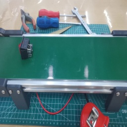
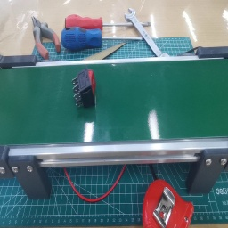
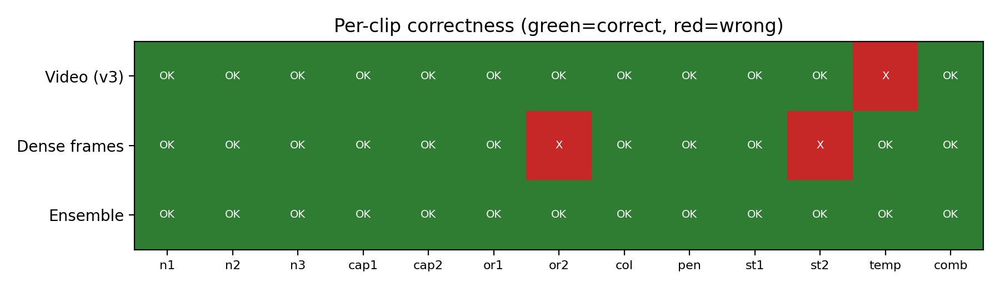

A Training-Free, Explainable Approach Using Zero-Shot Vision-Language Models — Multi-Persona Voting and VERA-lite.
CSE 496 - Graduation Project
Authors
Alper Kaan Güler
Yunus Emre Türk
Advisor
Asst. Prof. Habil Kalkan
Gebze Technical University
Why does traditional Computer Vision (CV) struggle in modern, agile manufacturing environments?
Classical models require thousands of labeled "defect" images. In highly optimized factories, anomalies are exceedingly rare, making data collection slow and expensive.
Every time a product design changes on the assembly line, custom models must be re-trained. We need a system that adapts via natural-language defect specifications.
Standard models flag an anomaly but cannot answer "Why?". On a factory floor, operators need human-readable justifications to trust the AI's decision.
Instead of training a detector, we prompt a frozen Vision-Language Model (VLM) — specifically qwen3.6-plus — with scene descriptions and anomaly rules. Zero training, full explainability.
From a public benchmark to a dataset we trust
We started on the public IPAD industrial benchmark. But its low-resolution clips made fine-grained colour & orientation verdicts unreliable — so we built our own high-resolution conveyor rig.


Used for our early experiments — including the multi-persona ensemble (next slide).
"Too low-res to judge colour & angle reliably"
Real clips from our rig — playing live.
7 types: missing cap · wrong orientation · wrong colour · missing pen · belt stop · unexpected movement · combined.
Approach 1 · on the IPAD button footage
Our first experiments ran on the IPAD push-button conveyor. A single prompt is unreliable on edge cases, so we adopt a self-consistency / persona-prompting paradigm: 20 synthetic "inspector personas" share the same anomaly rules but inspect each frame through a different professional lens, and vote.
Focuses purely on obvious visuals. "Is the button's cap the right colour? Which way do the connector pins point?" Sensitive to major structural breaks.
Examines how the part sits and travels on the belt — whether the connector's orientation matches normal factory operation.
Focuses on pixel-level cues: subtle cap-colour shifts, pin-angle misalignment, lighting artifacts and geometry in the frame.
5 maximally-diverse voters + 1 consensus prompt. Tie = LOW confidence flag.
Key finding: compact YES/NO formats caused systematic false negatives. Forcing an "articulate-first" output (describe each frame, then decide) suppressed the model's bias toward "normal".
The Academic Foundation
Ye, Liu & He — Explainable Video Anomaly Detection via Verbalized Learning of Vision-Language Models. Its insight: an abstract prompt ("is there any anomaly?") gives only 53–65% AUC; concrete, learned guiding questions do far better — with the model weights frozen.
No fine-tuning and no external reasoning module. The model is adapted purely through the prompt.
Questions are learnable parameters: a learner VLM answers them, an optimiser VLM rewrites them from mistakes — using only coarse video-level labels.
At inference: segment scores → add scene context by ensembling → frame-level scores via temporal Gaussian smoothing. SOTA on UCF-Crime & XD-Violence.
We keep VERA's learner/optimiser question-learning core, but simplify it to clip-level verdicts for the factory setting → VERA-lite.
Approach 2 — our adaptation
We first prototyped VERA-lite on IPAD too, but moved to our custom pen dataset once we saw IPAD was too coarse for fine-grained verdicts. Here we run VERA's Verbalized Learning loop on that data, then read a single clip-level verdict.
The optimiser noted: "VLMs struggle with logical negation." It shifted prompts from negative constraints to positive verification, boosting accuracy from 0.77 to 0.92.
| Anomaly Family | v2 (Negated / Weak) | v3 (Positive / Hardened) |
|---|---|---|
| Count | no missing pen and no empty gap | exactly three pens in a single row |
| Colour | none differing in colour | identical barrel and cap colours, no mismatch |
| Belt Motion | without stopping, pausing, reversing | advances at every moment, never halting even briefly (1–3 s) |
For every clip the model returns structured JSON: a YES/NO answer with visual evidence for each guiding question, then the verdict, type, score and confidence.
On the wrong_colour clip, a single "NO" on the colour question drives the decision. The per-question evidence makes the verdict auditable on the factory floor.
{ "question_answers": [ { q:1 "YES" three pens in a row at 00:10 }, { q:2 "YES" all caps down, same orientation }, { q:3 "NO" leftmost pen is BLUE, others black } { q:4 "YES" all capped, similar length }, { q:5 "YES" board moves smoothly, no stop }, { q:6 "YES" pens fixed relative to the board } ], "verdict": "ANOMALY", "anomaly_type": "wrong_color", "anomaly_score": 1.0, "confidence": "HIGH", "reason": "one pen is blue while the other two are black — all pens must match" }
Verbatim learner output (blind v3 run) — abbreviated for display.
The Hard Case: In motion_temporal_01, pens shift mid-clip while the belt moves normally.
Native video input missed this entirely due to sparse internal frame sampling.
| Input Method | Accuracy | False Pos. | Catches Temporal? | Notes |
|---|---|---|---|---|
| Video (Continuous) | 12/13 (0.92) | 0 | No | Catches belt stops & edges, misses intra-object shift. |
| Dense Frames (16f) | 11/13 (0.85) | 0 | Yes | Catches shift, misses subtle orientation/stop. |
| OR-Ensemble (Video ∨ Dense) | 13/13 (1.00) | 0 | Yes | Disjoint blind spots! The union solves all cases. |
Per-clip correctness: the two views have disjoint blind spots — only the ensemble (bottom row) is fully green.

qwen3.6-plus is a reasoning model. On dense input, it occasionally spent over 15,684 reasoning tokens, causing latency spikes (85.2s per clip) and timeouts.
Bonus: Capping the budget forced determinism. Verdict flips across 3 runs dropped from 2 clips to exactly 0. The true (repeatable) accuracy is 0.846 — 11/13 in every run, not the lucky single-run 0.92.
VLM-based explainable VAD is viable for industry without labeled data. Future: Deploy a cascade pipeline (cheap CV detector first, VLM only on flagged segments) for real-time factory floor deployment.